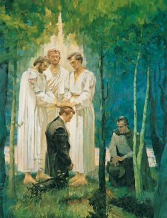

Those whom the Lord hath called in these last days

Hearken, O ye people of the earth, to the tidings of those whom the Lord hath called in these last days. The Lord hath appointed two elders to lead His Church, having bestowed upon them the Holy Priesthood and the keys of the ministering of angels.
Joseph Smith, Jun. — First Elder
Joseph Smith, Jun., First Elder of the Church of Christ, was raised up by the Almighty God. Born in the state of Vermont and raised in the wilderness of New York, he was but a humble farm boy when the heavens were opened unto him. He was called of God and ordained an Apostle of Jesus Christ to be the first elder of this church, holding the authority to translate holy records by the gift and power of God.
Oliver Cowdery — Second Elder
Oliver Cowdery, Second Elder of the Church of Christ, is a school teacher by trade and a faithful witness to the great work of the Lord. The Lord commanded him to act as scribe for the translation of the sacred plates. He too received the holy priesthood under the hands of heavenly messengers and was ordained an Apostle of Jesus Christ, standing as a second witness to the truth of this marvelous work.